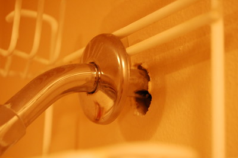

Mousecapades
[If you lightly scratch a finger nail on the bottom of a wooden table, you'll (roughly) hear the same sound we heard Monday night. Although Maria first noticed the sound, she didn't know what it was. Immediately after hearing it, I knew it was some kind of a rodent. I've dealt with rodents before. I lived in a house at one point where in a little over a month we killed 23 mice (that story would take its own blog entry). The difference between the rodents then and now is that my family was involved... and that's just not cool. You remember how I Shot the Sheriff? Well... my little rodent friend could only wish his death came as quickly.
We live in a very nice, new (not even a year old) condo. It's been a great place to live, and we can't really complain about it. We haven't had any issues with the place as a whole. Everything works just fine, since it's all brand new. We then don't have any of the issues that accompany older places. The only thing that might ever cause us grief is our neighbors, but they don't nibble away at our walls and innards of our home. We get an occasional spider, but that's certainly not uncommon.
So... back to Monday night. Originally, a couple good thumps on the wall would make him pretty quiet. If it was going to be a rodent, I could only hope it was a mouse as opposed to a rat. We live next to a corn field—on the opposite side of the building on the second floor, so not right next to it, but you get the point. Late last week they did a bunch of work in that field, so I can understand if that stirred up the local residents. With little effort, I'm sure a path was found somehow into the building, and this little dude was hanging out inside my wall.
I knew I needed to find him, and soon. Maria was freaking out, and I thought it was pretty uncool. I could hear the scratch... all I had to do was set the traps. The weird thing about where he chose was that it was totally random (to me). It could have been a dozen other places to be in my wall, but he chose to be (from what I could hear) right up near the ceiling, above my shower. Why there? It's not like there's an outlet there. I tried getting access into the wall by dismantling the light – insulation. Tried the fan in the bathroom – more insulation.
I had 6 handy traps, and nowhere to put them. I looked all over for access points, or paths he might choose to leave the wall, since eventually he would need food. Nada... except for the shower head. Shower heads come out of the wall (as you can see in this handy picture) with room to spare. It's no big deal, since the builders put that handy little vanity plate there to cover up the imperfection. It makes it look nice and smooth. But if you move that little plate back... voilà, a perfect little place to come out, or almost. All it would need would be a little more work and then a mouse could fit out of there. With a lot more work a rat could fit out.
I felt along the wall to see where our little critter was gnawing. I couldn't feel anything, but I moved back the little cover, just out of curiosity. In no more than a few seconds his little nose came popping out, and I could see it was a little mouse... about to meet his maker.
The sick part of me loves to catch things like this. It's a bit more of a challenge than catching say... a little 2 year old kid trying to hide. Those 23 mice I told you about earlier? I've got great stories about some of those, some with elaborate traps, or homemade blow torches. It's all part of my enjoyment of solving puzzles, but in this case it's a mouse.
Once I saw it was a mouse, as well as the amount of space he actually needed to clear in order to get out (almost none, now that I moved that cap back), I knew I could set the traps. You can see in the picture above that I had the shower caddy rigged up high. I turned it upside down so the mouse could come down the wall more easily. I figured he would be more prone to come out if he had an easy step instead of a big jump. Although that first step was going to be easy, the rest of it surely wasn't going to be. I had 3 traps rigged there on the caddy, another 2 along the top of the shower (in case he wanted to walk along there for a bit), and another one down on the floor of the shower. I was determined for those six traps to catch him.
Much like a watched pot never boils, I figured that I wasn't actually going to see the whole dirty deed happen. With my rearranging of the shower caddy I thought I had scared him off for a little bit, and I had work to do. I closed the door and walked away. I came back here to the computer, sat down, and it couldn't have even been 3 minutes and I heard that wonderful sound of a trap doing its duty. An already long story, I'll shorten the rest by saying that it worked. I trashed the trap and the mouse, left the traps set up for the next day, but didn't have any other problems. Finished.
In honor of the little critter, I'll do two of my favorite things: a haiku and a list. First the haiku:
Maria freaked out
Apparently you liked the
Peanut butter bait
Always a classic. And now to finish this off, here are the top places not to visit if you're in the neighborhood and you're a mouse
- My house
- My bathroom
- The wooden traps with peanut butter, strategically placed on my upside down shower caddy
- A paper garbage bag while wearing a wooden trap around your neck, with a faint taste of peanut butter in your mouth
I really dislike mice, so I'm glad he's gone. It'll be my luck if he's like an ant and left a trail of some kind that other mice will follow and end up in my shower. Let's just hope this is it.
{kind=link}